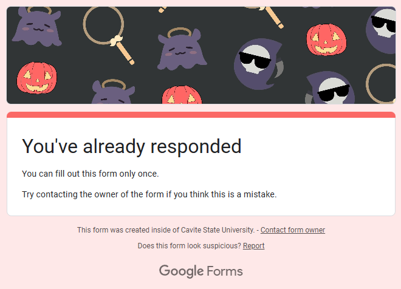
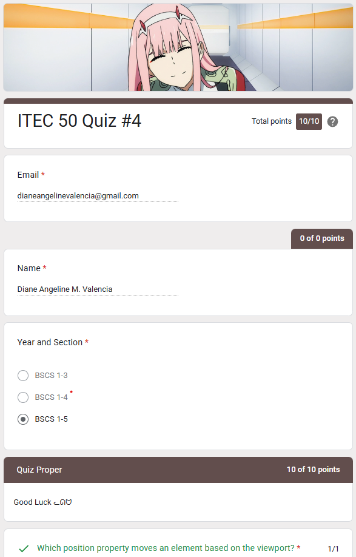
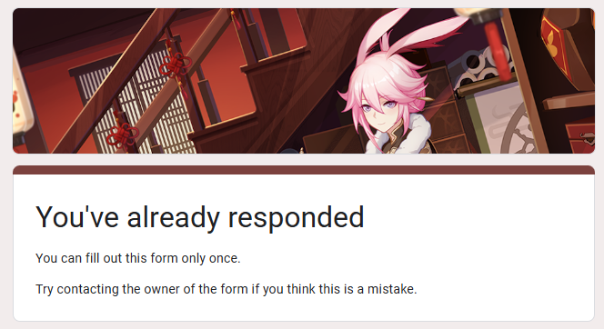
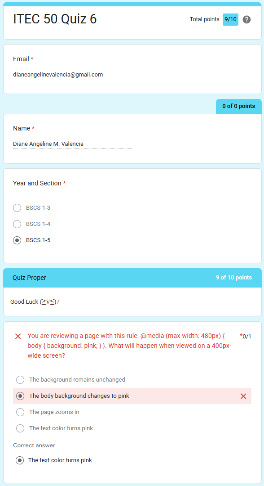

MY GROWTH
- My Growth from Quiz No.1 to Quiz No.6:
- From Quiz 1 to Quiz 6, I’ve grown steadily in my understanding of web development. I began with a strong foundation in HTML, earning a perfect score in Quiz 1. As I progressed into more advanced topics like HTML5 and CSS properties, I faced some challenges, but they pushed me to study more deeply and apply what I learned.
- By the time I reached the later quizzes, I could confidently apply responsive design techniques, use media queries effectively, and understand how to build layouts that adapt across devices. Even when I missed a question, it became a learning moment that helped reinforce the concepts.
- Each quiz has helped build my confidence, sharpen my problem-solving skills, and strengthen my ability to think like a developer.
LIST OF QUIZZES
Quiz No. 1

Content and Learning
- About:
- This quiz tested my knowledge in the basics of HTML (HyperText Markup Language)—the standard language for creating and structuring web content. It covers essential tags, document structure, and HTML's role in building static and dynamic websites.
- What I learned:
- I learned how HTML uses elements like < html >, < head >, and < body > to structure a webpage. I also understood how HTML works with CSS and JavaScript to create interactive, styled content, forming the foundation of all modern websites.
Quiz No. 2

Content and Learning
- About:
- This quiz allowed to test my mastery and knowledge in the core elements of HTML and highlights the key features of HTML5. It covers basic tags like , , , headings, paragraphs, images, links, and lists, along with modern HTML5 elements for structure, multimedia, forms, and interactivity.
- What I learned:
- I learned how HTML elements form the structure of web pages and how HTML5 improves this with semantic tags, built-in multimedia support, and enhanced form controls. Understanding content models and elements like < section >, < article >, < audio >, < video >, and < svg > helped me see how modern web pages are structured for both functionality and accessibility.
Quiz No. 3

Content and Learning
- About:
- This page covers the fundamentals of CSS (Cascading Style Sheets) and provides an overview of common CSS properties used to style HTML elements. Topics include syntax, selectors, colors, text formatting, box model, and layout properties.
- What I learned:
- I learned how CSS enhances the appearance of web pages by applying styles to HTML elements. I explored different selectors, how to change colors, spacing, fonts, and how layout is controlled using properties like margin, padding, border, and display.
Quiz No. 4

Content and Learning
- About:
- This quiz focuses on advanced CSS layout and positioning concepts, covering how elements behave in a web page using properties like position, float, display, z-index, and overflow. It also touches on responsive design principles and frameworks like Bootstrap.
- What I learned:
- I learned how different CSS properties affect the structure and visibility of elements. I now understand the purpose of values like static, fixed, inline-block, and display: none, as well as how frameworks like Bootstrap use grids to build responsive layouts.
Quiz No. 5

Content and Learning
- About:
- This quiz explores the principles of responsive web design, focusing on mobile-first strategies, flexible layouts, image responsiveness, and the use of media queries to adapt designs across screen sizes and devices.
- What I learned:
- I learned how to create layouts that adjust to various devices using media queries, fluid grids, and scalable images. I also understood the importance of the viewport meta tag, relative units, and print-specific styles for accessibility and performance across all platforms.
Quiz No. 6

Content and Learning
- About:
- This quiz focuses on practical techniques for creating responsive web layouts. It highlights media queries, flexible images, mobile breakpoints, and key CSS properties used to ensure designs work smoothly across different screen sizes, especially on mobile devices.
- What I learned:
- I learned how to apply media queries and viewport settings to optimize websites for mobile. I also understood the use of max-width, srcset, and flex-wrap, as well as how to handle print styles and common breakpoints like 480px for small screens.